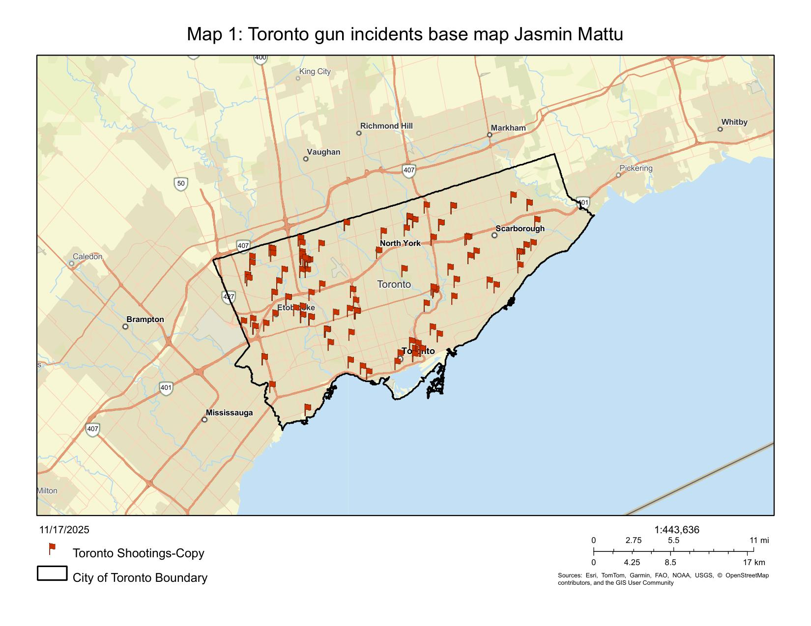
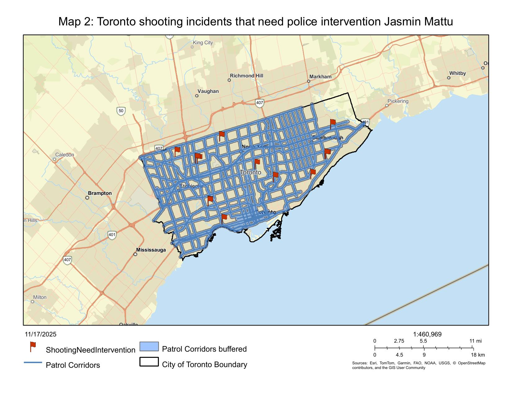
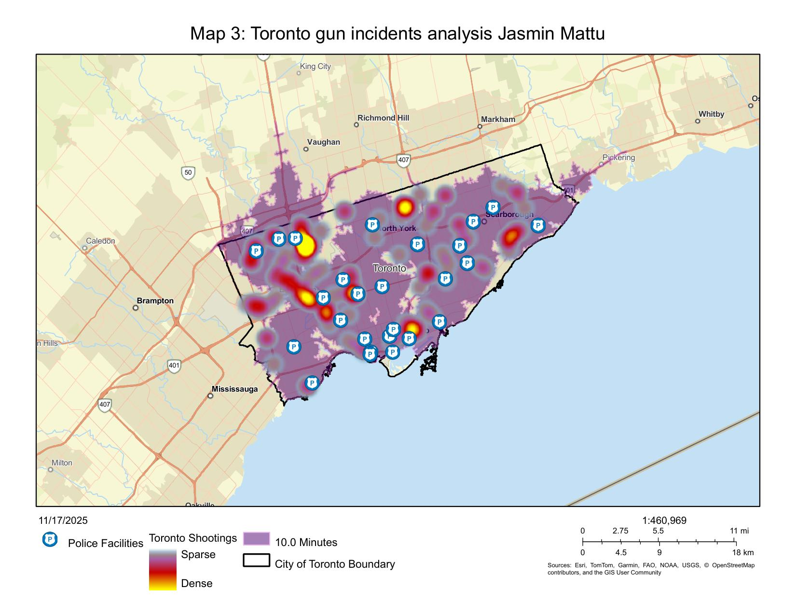

← All Work
Toronto Gun Incident Analysis
A spatial analysis of gun incident data across the City of Toronto, identifying crime hotspots, deriving optimal patrol service areas, and modelling patrol corridor routes for law enforcement resource planning.

Map 1: Gun incident locations across Toronto. Base map by Jasmin Mattu.
Objectives
- Map the spatial distribution of gun incidents across Toronto neighbourhoods
- Identify incident density hotspots to prioritise patrol resource allocation
- Delineate patrol service areas using network-based analysis
- Generate optimal patrol corridor routes connecting high-density zones
Methods
- Kernel density estimation to produce continuous incident-density surfaces
- Service area analysis using ArcGIS Pro Network Analyst to define patrol catchments
- Route optimisation along the road network for patrol corridors
- Choropleth mapping of incident counts by neighbourhood

Map 2: Patrol service areas from network analysis

Map 3: Incident density & patrol corridors
Tools
- ArcGIS Pro: mapping, Network Analyst, Spatial Analyst
- Kernel Density Estimation: hotspot surface generation
- Service Area & Route solvers: patrol catchment and corridor planning